Getting Started with Rguroo
0.1 What is Rguroo?
Rguroo is a statistical software program designed to help students explore data and perform statistical analyses. Throughout this text, Rguroo will be used to carry out calculations, create graphs, and conduct statistical inferences. Using Rguroo allows us to focus on understanding statistical concepts and interpreting results rather than spending excessive time on complicated calculations. As new statistical methods are introduced, you will learn how to use the corresponding tools in Rguroo to perform the analysis and interpret the output.
Click Here to watch a video overview of Rguroo.
0.2 Creating a Student Account
To use Rguroo, you will first need to create a student account.
Step 1: Registration Page
Go to the Rguroo website and select Register in the upper-right corner of the page.
On the registration page, select Student.
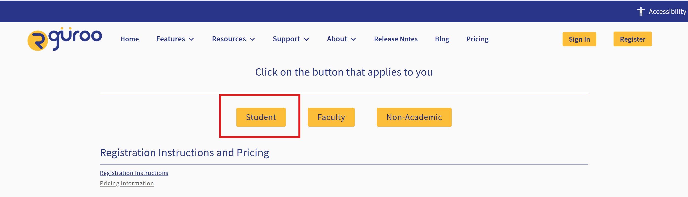
Step 2: Select Account Type and Verify Email
Select the type of account needed. Students can choose from the following account types.
- Create a free trial account: Try Rguroo for free for ten days. Only one trial account per individual is allowed.
- Create a new account: Don’t have an Rguroo account? Select this option to register for a new account.
- Renew your account: Extend the subscription for your existing Rguroo account.
- Extend your trial account: Is your trial account is about to expire, or is expired? Purchase an Rguroo subscription
Next, select the type of subscription needed. The following options are available.
- Purchase Premium Support: Premium Support is optional and can be added by checking this box. All accounts come with standard support.
- Have Access Key: If you have an Access Key, select this option. Note: This is not a group code.
- If you don’t have an Access Key, select one of the two subscription lengths: 6 Months or 12 Months (check with your instructor on the length you need).
Now, type and retype your student email address in the next two boxes. Your email address will be your Rguroo username. Then, click the Submit button.
After clicking submit, check your email. A verification code will be sent to the email address you provided in the registration page.
Open the email and follow the directions by typing or copy/paste the Email Verification Code in the form. Then, click the submit button.
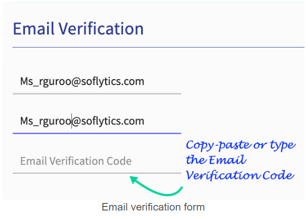
Step 3: Enter Your Information
If you are creating a new account, fill out the information in the Your Information page. You will enter:
- First and last name
- Select U.S. or International
- Your institution/college name.
If you have an Access Key, type it in the space provided, read and check the box for the Terms of Service, and click the Submit button. Then, proceed to Step 5.
Step 4: Billing Information
If you do not have an access key and need to purchase an Rguroo subscription, enter your credit card number and billing information. Click Submit and go to Step 5.
Step 5: Sign-in to Rguroo
If your registration is complete, you should have received an email with a temporary password. You can now log into Rguroo by following the steps below.
- Open the email, and copy your temporary password.
- Go to the link https://www.rguroo.com.
- Click the Sign in button.
- Type in your Username. Your username is your email address.
- You will be asked for the temporary password that was emailed to you. Type or paste it into the Temporary Password box.
- Type-in a new password, and retype your new password.
- Click the LOGIN button.
Congratulations! Your Rguroo account is ready to use. Have an enjoyable and productive journey with Rguroo!
0.3 Rguroo Dashboard and Icons
Before you begin using Rguroo, take a few minutes to explore the dashboard and become familiar with its main features. You do not need to learn every feature at once. As you work through the examples in this book, you will be directed to the appropriate menus and tools. The numbered items below highlight the main areas of the dashboard that you will use. Figure 4 illustrates the main areas of the Rguroo dashboard. More detail of each follows.
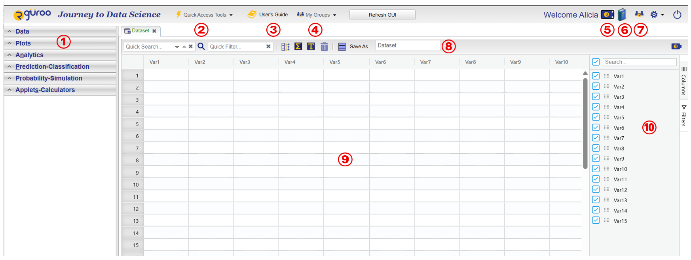
1 Toolbox Menu
The menu on the left organizes Rguroo’s statistical tools into categories. Expand Data, Plots, Analytics, Prediction-Classification, Probability-Simulation, or Applets-Calculators to access the tools available within each category.
2 Quick Access Tools
Provides shortcuts to commonly used Rguroo features, including importing datasets and RGR files, opening the Scientific Calculator, viewing shortcut keys, accessing the Dataset Repository, and opening Jupyter Lite.
3 User’s Guide
Opens the web-based Rguroo User Guide, where you can find instructions and additional help for using Rguroo’s features and tools.
4 My Groups
Provides access to groups associated with your Rguroo account, such as groups created for your class or course.
5 Tutorial Videos
Provides access to instructional videos that demonstrate how to use Rguroo’s features and statistical tools.
6 Documentation
Opens a PDF Rguroo User Guide, where you can find instructions and additional help for using Rguroo’s features and tools.
7 Faculty Dashboard
Provides instructors with access to course and group management tools and other faculty resources.
8 Save As
Allows you to name and save the current dataset, plot, or output for later use. Saved tabs will appear in the Data Toolbox.
9 Data Workspace
Displays a dataset template in a spreadsheet-style format, with variables in columns and observations in rows.
10 Columns and Filters Panel
Allows you to control which variables are displayed and filter the dataset to focus on selected observations.
Click Here to watch a video walkthrough of the Rguroo dashboard.
0.4 Creating and Importing Datasets
Before you can analyze data in Rguroo, the data must first be entered or imported into the program. Rguroo provides several ways to create and work with datasets, depending on how your data are organized and where they are located. In this section, you will learn how to create a dataset containing one variable, enter data organized as a contingency (two-way) table, copy and paste data from an external source, and import an existing dataset into Rguroo. These skills will allow you to prepare your data for the statistical analyses and graphical displays introduced throughout this book.
0.4.1 Creating Datasets in One Variable
You can create a dataset directly in Rguroo by entering your observations into the Dataset Editor. For a dataset containing one variable, each value is entered in a separate row of a single column. Follow the steps below to create a dataset in one variable.
- Open the Data toolbox on the left side of the Rguroo window.
- Click the Data Import drop-down menu and select Create New Dataset.
- In the Create New Dataset window:
- Enter the number of observations in the Rows field.
- Enter 1 for the number of columns.
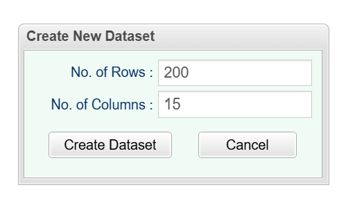
- Click Create Dataset. A dataset containing one column will open in the Dataset Editor. The variable is initially named Var1. You can rename the variable with a meaningful name that describes the data, such as Height, ExamScore, or StudyHours. To rename the variable, select the three horizontal bars to the right of Var1. Then click Rename.
- Enter the data values in the column, placing one observation in each row.
- In the Save As box, enter a descriptive name for the dataset and save it. The dataset will now show in your Data toolbox.
Click Here to watch a video of how to create a dataset.
Walkthrough Example: Creating a Dataset in One Variable
Suppose a student surveys five students in their class and record the number of hours they study per week. The data is recorded in the table below. Enter the data into Rguroo and save as Study Hours.
| Study Hours |
|---|
| 6 |
| 10 |
| 8 |
| 5 |
| 12 |
Let’s Create the Dataset: For this dataset, we will need 5 rows and 1 column, so enter 5 for No. of Rows and 1 for No. of Columns.
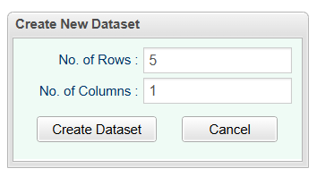
Once you have opened the workspace for 5 rows and 1 column, click on the first row to enter your data. Use the Tab key on your keyboard to move to the next entry. Once you are finished entering your data, rename your Var1 to “Hours” and save the dataset as Study Hours.
Below is an image of the completed and saved dataset.
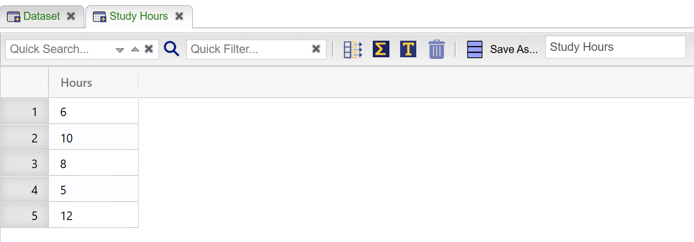
Now that you have saved your dataset, it will appear in your Data toolbox.
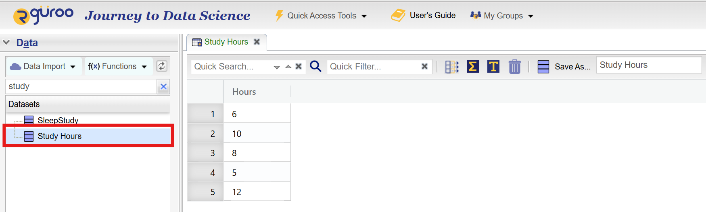
Note: If you have many datasets, you can type the first few letters of the dataset name in the search bar which will narrow the list.
0.4.2 Creating Tables
The Table Editor in Rguroo lets you easily create one-way or two-way frequency tables directly within the application. Follow the steps below to create a table.
- Open the Data toolbox located on the left-hand side of the Rguroo application window.
- Click on the Data Import dropdown and select the Create New Table option.
- In the three textboxes at the top left of the Table Editor window, enter a row variable name (Row Variable), a column variable name (Col. Variable), and a name for the frequency or a numerical variable (Frequency).
- In the cells with gray backgrounds in the first row of the grid, enter the levels for the column variable.
- In the cells with gray backgrounds in the first column, enter the levels for the row variable.
- In the white-background cells (i.e., the body of the table), enter values corresponding to the specified row and column levels.
- To save your table as a table, enter a name for your table in the Save As Table textbox on the top, and click the Save as table button.
- To save your table as a dataset (with variables in columns) enter a name for your dataset in the Save As Dataset textbox on the top, and click the Save as button button to save your dataset. To see your dataset as a table click the View dataset icon.
Click Here to watch a video of how to create a table.
Walkthrough Example: Creating a One-Way Table
Suppose a pet store records the number of pets of each type currently available for adoption. The data are summarized in the frequency table below. Enter the table into Rguroo and save as PetStore
| Pet | Frequency |
|---|---|
| Dog | 8 |
| Cat | 6 |
| Fish | 4 |
| Bird | 3 |
| Rabbit | 2 |
Let’s Create the Table: This table only has one variable, Pet, and the corresponding frequencies of each pet type, so we make a one-way table. Open the table workspace and enter Pet for the Row Variable and Frequency in the Frequency box. We do not have a column variable, so we will leave that blank. Next, enter the frequencies. Once you have completed entering the frequencies, your table should look like Figure 9.
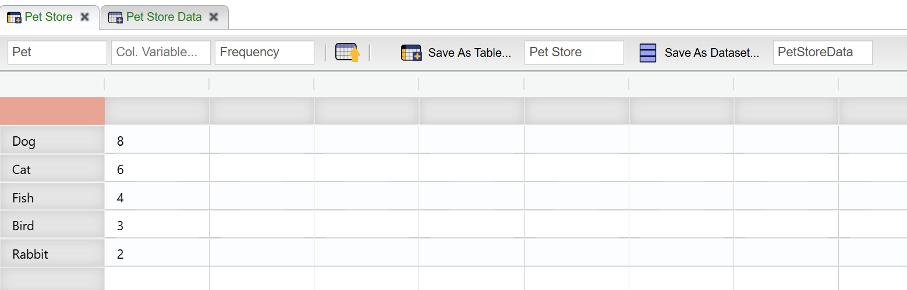
For tables, you can save in two ways; a table and/or a dataset. It is recommended that you save as both, so you have both forms available to you for future analysis. For this example, the table is saved as Pet Store and it is also saved as a dataset, named Pet Store Dataset. Saving the table as a dataset allows you to make charts, graphs, and perform analysis later on.
Once you have saved your table as both a table and dataset, look at your Data toolbox. You will see both versions which you can use later. Figure 10 shows the dataset first and the table saved directly below.
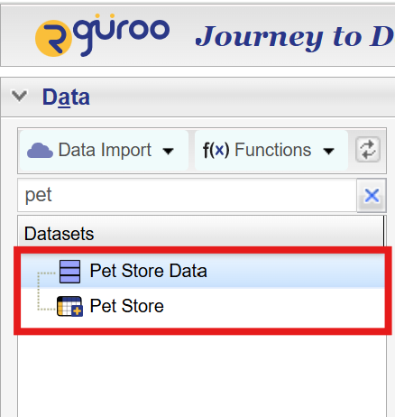
Walkthrough Example: Creating a Two-Way Table
Suppose students are asked about their preferred type of exercise and whether they prefer to exercise indoors or outdoors. The results are summarized below. Enter the table into Rguroo and save as Exercise.
| Type of Exercise | Indoors | Outdoors |
|---|---|---|
| Walking | 3 | 8 |
| Running | 4 | 7 |
| Cycling | 5 | 9 |
Let’s Create the Table: This table has two variables, Type of Exercise and Location, so we will create a two-way table. Similar to the example for a one-way table, open the table workspace. For this table, we will enter Type of Exercise as the row variable, Location for the column variable, and Counts as the frequency. Next, enter the counts as shown in the table. When you are finished entering the table, it should look like Figure 11.
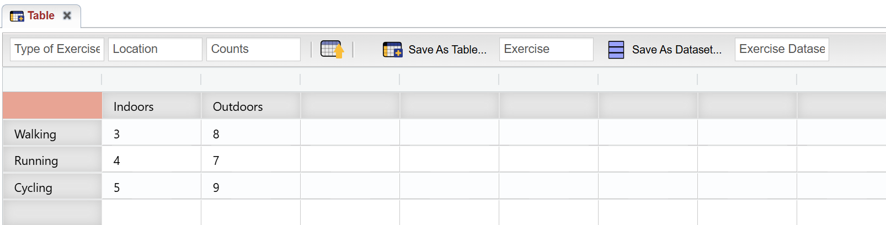
As before, we will save the table both as a table and dataset. In this example, the table is named Exercise and the dataset is named Exercise Dataset.
Note: If a table is not saved, the tab in the workspace will show as red. Once saved, the tab will change to green. Figure 12 shows the red tab and Figure 13 shows the tab green after saving.
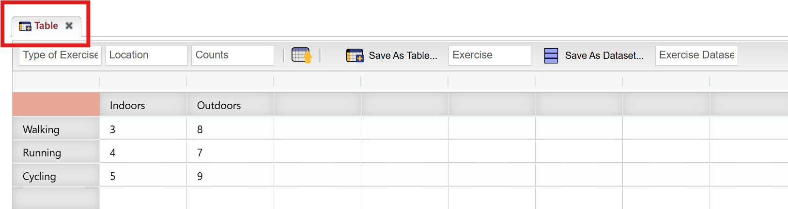
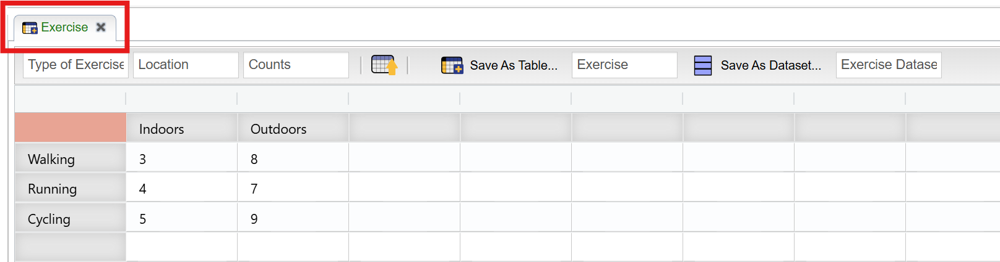
As before, once saved, your tables and datasets appear in your Data toolbox.
0.4.3 Copy and Paste Data from External Sources
Sometimes the data you need may already be available from an external source, such as MyOpenMath, a spreadsheet, or another course resource. Rather than entering each value individually, you can copy and paste the data directly into Rguroo. This is a quick and efficient way to transfer datasets while reducing the chance of errors that can occur when entering data manually.Follow the steps below to copy and paste from an external source.
- Open both the program with your external data source (such as MyOpenMath) and Rguroo. Note that Rguroo automatically opens a dataset editor when you login. You can use this workspace to paste your data into.
- Go to the external data source and highlight data. Copy the data by pressing Control + C (PC) or Command + C (Mac) on your keyboard.
- Go to your dataset workspace in Rguroo and click on the first cell in the dataset editor. Then paste your data by pressing Control + V (PC) or Command + V (Mac) on your keyboard. This will paste the data exactly as shown from the external dataset.
- If your dataset is one variable but is showing as multiple variables in Rguroo, cut and paste the columns into one column. To cut the column, highlight the column and press Control + X (PC) or Command + X (Mac) on your keyboard. Then go to the next available space in Var1, click on that empty space and paste using the keyboard commands as above. Continue this until all of your data is in the Var1 column.
- Save your data so you can use it for analysis later.
Click Here to watch a video of how to copy and paste a large dataset from MyOpenMath.
0.4.4 Importing Datasets {importing-datasets}
Rguroo provides several options for importing existing data, making it easy to begin working with a dataset without entering the values manually. You can import a dataset from an external file, select a dataset from the Rguroo Repository, or access datasets that have been shared with you through My Groups. Once imported, the dataset is available in your Data toolbox, where you can view, organize, and analyze the data.
Rguroo Repository
The Rguroo Repository provides access to public datasets that are already available within Rguroo. Rather than creating a dataset from scratch or importing one from an external source, you can browse the repository, select a dataset, and add it to your Data Workspace. This is a convenient way to explore existing datasets and quickly begin working with data for statistical analysis. Faculty can create their own private dataset repository to share data with students. For more information on creating your private dataset repository see Need to link to instructor dashboard section when sections are done. Follow the steps below to import a dataset from the Rguroo repository.
- Open the Data toolbox located on the left-hand side of the Rguroo application window.
- Click on the Data Import dropdown and select the Dataset Repository option. This will open the Rguroo Dataset Repository dialog box.
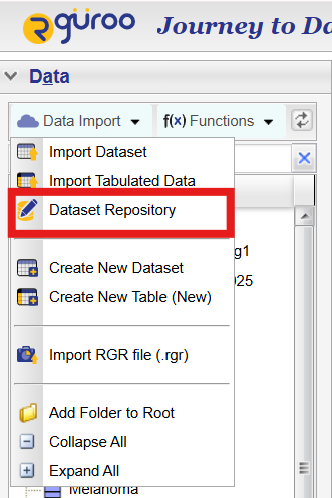
- If you know the file name, enter the name (or first few letters) in the Quick Filter search box. This will narrow the files listed and you can select your dataset.
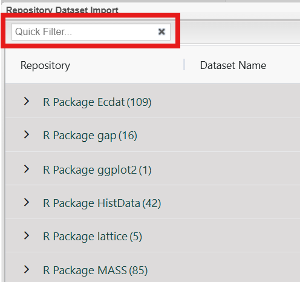
- Select your dataset, and click import. Your dataset will now be saved in your Data toolbox.
If you are not searching for a specific dataset, feel free to browse the dataset repository. You can still enter key words in the Quick Filter search box to narrow down your search.
Need video
Computer or External File
If your dataset is saved on your computer or another storage location, you can import the file directly into Rguroo. You can import files in various formats such as Excel, CSV, text, SPSS, SAS, etc. Once imported, the dataset is added to your Data toolbox, where you can view the data and begin your statistical analysis. Follow the steps below to import a dataset from your computer or external file.
- Open the Data toolbox located on the left-hand side of the Rguroo application window.
- Click on the Data Import dropdown and select the Import Dataset option. This will open the File Import dialog box.
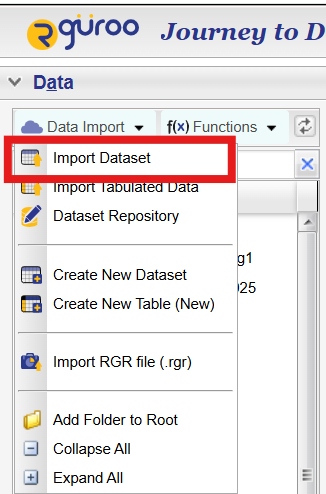
- If the file is saved on your computer or external drive (such as USB), select Choose Folder and select the folder. If the file is from a URL, select URL and type or paste the URL in the space provided.
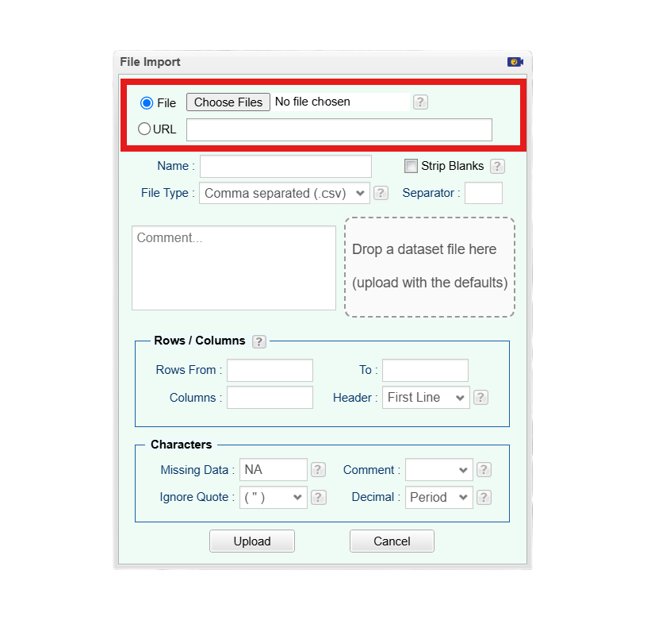
- Click Upload and your dataset will now be available in your Data toolbox.
Need video
My Groups
The My Groups area in Rguroo provides access to datasets that have been shared within a group, such as those provided by your instructor for a course or assignment. You can select a shared dataset and import it into your Data toolbox, where it is ready to view, explore, and analyze. In order to import a dataset from My Groups, your instructor must provide you with the group code where you can join the group. Follow the steps below to join a group and then import a dataset from your group.
- To import a dataset from a shared group, you will first need to join the group. To do this, click My Groups and select Join a Group.
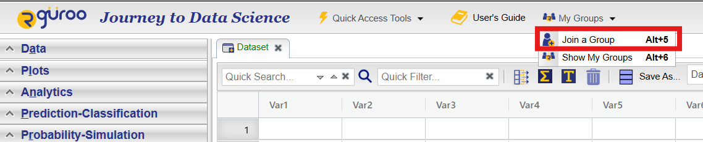
- Enter the join code provided by your instructor (or group leader) and click Join Group.
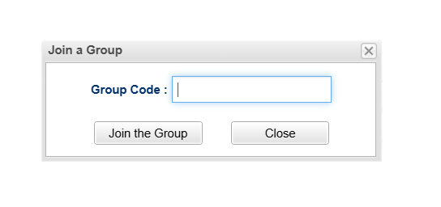
- Now that you have successfully joined a group, you will have access to import the datasets within that group. To access and import the group datasets, click back on My Groups, but now select Show My Groups. This will open the Dataset/Archive repository dialog box.
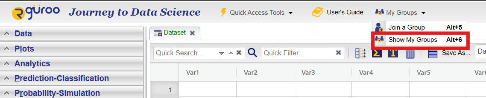
- In the Dataset/Archive repository dialog box, click on your group and it will show the accessible repositories. Click on the repository you want, and it will display the datasets. Click on a dataset and click Import Selected Datasets. You can select mulitple datasets and import them at once by clicking on a dataset, press and hold Control (PC) or Command (Mac) while selecting additional datasets.
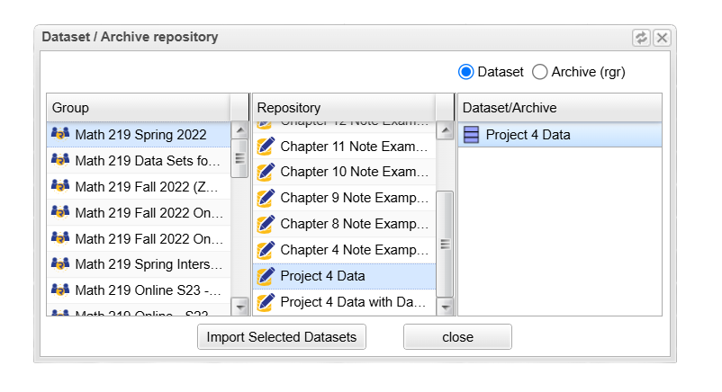
Need video
0.4.5 Practice: Try It Yourself
The following practice problems provide an opportunity to become familiar with creating and importing datasets in Rguroo. Use them to build confidence working with different methods of entering and importing data before completing graded assignments.
Try It: Create a Dataset in One Variable
A fitness instructor recorded the number of minutes 5 participants exercised during a morning workout session. Create a one-variable dataset in Rguroo using the data below. Name the variable Exercise Time. Save the dataset with an appropriate name.
| Exercise Time |
|---|
| 32 |
| 45 |
| 28 |
| 40 |
| 35 |
Try It: Create a One-Way Table
A group of students was asked to identify their preferred way to study for an exam. Their responses are summarized in the table below. Create a one-way table in Rguroo using the data below. Use Study Method as the row variable and enter the corresponding frequencies. Save the table and dataset with appropriate names.
| Study Method | Frequency |
|---|---|
| Practice Problems | 12 |
| Flashcards | 8 |
| Study Groups | 6 |
| Reviewing Notes | 10 |
| Videos | 4 |
Try It: Create a Two-Way Table
A local animal shelter recorded the type of pet adopted and whether the adoption occurred on a weekday or weekend. Create a two-way table in Rguroo using the data below. Use Adoption Day as the row variable and Type of Pet as the column variable. Save the table and dataset with appropriate names.
| Adoption Day | Dog | Cat | Other |
|---|---|---|---|
| Weekday | 18 | 14 | 6 |
| Weekend | 22 | 17 | 8 |
Try It: Copy and Paste a Large Dataset from External Source
A coffee shop recorded the number of customers who visited during the first hour after opening on 25 different days. The results are shown below. Create a one-variable dataset in Rguroo by copying and pasting the values into Rguroo. Then, move the data into one column in Rguroo. Name the variable Customers. Save your dataset with an appropriate name.
| 24 | 31 | 28 | 35 | 27 |
| 33 | 29 | 38 | 26 | 32 |
| 30 | 36 | 25 | 34 | 29 |
| 37 | 28 | 31 | 40 | 33 |
| 26 | 35 | 30 | 32 | 34 |
Try It: Import a Dataset from Rguroo Repository
Data was collected for two semesters in a statistics class on students’ transportation, demographics, living expenses, preferences, and academic majors. Import the dataset from the Rguroo dataset repository. Remember, you can type in the first part of the dataset name to filter and narrow the list.
 The dataset is available in the Rguroo dataset repository, with the dataset name class_survey1. Table 1 shows the variables and the first 6 rows of the data set. A complete description of the variables is provided in the dataset code book that follows.
The dataset is available in the Rguroo dataset repository, with the dataset name class_survey1. Table 1 shows the variables and the first 6 rows of the data set. A complete description of the variables is provided in the dataset code book that follows.
| vehicle | gender | distance_campus | ice_cream | rent | major | height | winter |
|---|---|---|---|---|---|---|---|
| None | Female | 1.5 | Cookie Dough | 724 | Environmental and Sustainability Studies | 61 | Liked it |
| Mercury | Female | 14.7 | Sherbet | 200 | Administrative Justice | 60 | Don’t like it |
| Ford | Female | 2.4 | Chocolate Brownie. | 600 | Bio Chem | 68 | Liked it |
| Toyota | Female | 5.2 | coffee | 0 | 66 | Loved it | |
| Jeep | Male | 2.0 | Cookie Dough | 600 | Pre-health Careers | 71 | Loved it |
| Subaru | Male | 5.0 | none | 500 | Finance | 72 | No opinion |
Code book for Class Survey1 Dataset
Description The dataset gives survey results from two semesters of statistics classes at Coconino Community College in the years 2018-2019.
Format
This dataset contains the following columns:
vehicle: Type of car a student drives
gender: Self-declared gender of a student
distance_campus: How far a student lives from the Lone Tree Campus of Coconino Community College (miles)
ice_cream: Favorite ice cream flavor
rent: How much a student pays in rent
major: Students declared major
height: Height of the student (inches)
winter: Student’s opinion of winter (Love it, Like it, Don’t like, No opinion)
Source
Kozak K (2019). Survey results form surveys collected in statistics class at Coconino Community College.
References
Kozak, 2019
0.5 Dataset Editor
The Dataset Editor in Rguroo provides tools for viewing and editing an existing dataset. As you work with data, you may need to make changes such as adding or removing observations, renaming variables, or correcting values. The Dataset Editor allows you to make these changes directly within Rguroo so that your data are organized and ready for analysis.
0.5.1 Dataset Summary
Once you have imported a dataset into the Data toolbox, you can inspect the data using the Dataset Summary. The Dataset Summary in Rguroo provides an overview of the variables and observations contained in a dataset. It allows you to quickly review the structure and characteristics of the data before beginning an analysis. Examining the dataset summary can help you become familiar with the data and verify that the dataset contains the information you expect. Follow the steps below to inspect the dataset summary.
- Import your dataset.
- Go to the Data toolbox and right click on the dataset you would like to inspect. Select Dataset Summary.
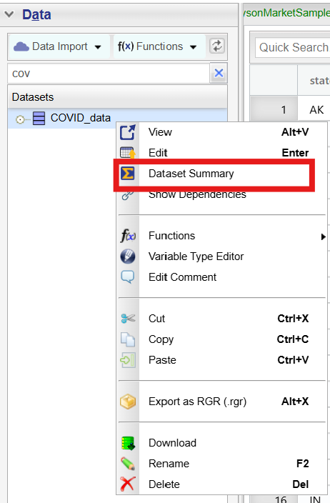
- The dataset summary will now show in your workspace.
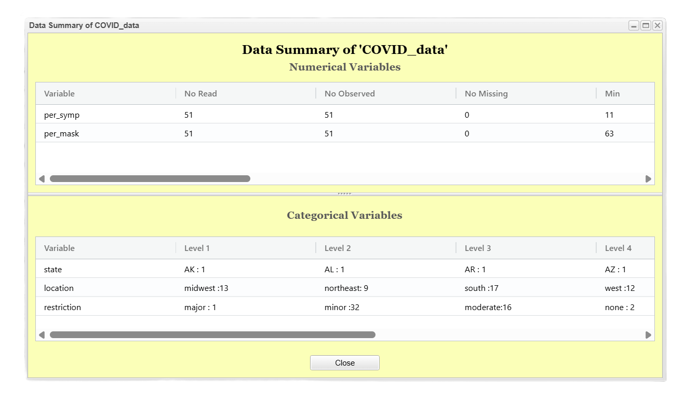
Walkthrough Example: Inspecting Data Using the Dataset Summary
A sleep study collected information from college students about their sleep habits, academic experiences, and overall well-being. Variables include sleep and wake times, average amount of sleep, class schedules, GPA, classes missed, and measures related to cognition, stress, anxiety, depression, and happiness. Import and inspect the data.
 The dataset is available in the Rguroo dataset repository, with the dataset name SleepStudy. Table 2 shows the variables and the first 6 rows of the data set. A complete description of the variables is provided in the dataset code book that follows.
The dataset is available in the Rguroo dataset repository, with the dataset name SleepStudy. Table 2 shows the variables and the first 6 rows of the data set. A complete description of the variables is provided in the dataset code book that follows.
| Gender | ClassYear | LarkOwl | NumEarlyClass | EarlyClass | GPA | ClassesMissed | CognitionZscore | PoorSleepQuality | DepressionScore | AnxietyScore | StressScore | DepressionStatus | AnxietyStatus | Stress | DASScore | Happiness | AlcoholUse | Drinks | WeekdayBed | WeekdayRise | WeekdaySleep | WeekendBed | WeekendRise | WeekendSleep | AverageSleep | AllNighter |
|---|---|---|---|---|---|---|---|---|---|---|---|---|---|---|---|---|---|---|---|---|---|---|---|---|---|---|
| 0 | 4 | Neither | 0 | 0 | 3.60 | 0 | -0.26 | 4 | 4 | 3 | 8 | normal | normal | normal | 15 | 28 | Moderate | 10 | 25.75 | 8.70 | 7.70 | 25.75 | 9.50 | 5.88 | 7.18 | 0 |
| 0 | 4 | Neither | 2 | 1 | 3.24 | 0 | 1.39 | 6 | 1 | 0 | 3 | normal | normal | normal | 4 | 25 | Moderate | 6 | 25.70 | 8.20 | 6.80 | 26.00 | 10.00 | 7.25 | 6.93 | 0 |
| 0 | 4 | Owl | 0 | 0 | 2.97 | 12 | 0.38 | 18 | 18 | 18 | 9 | moderate | severe | normal | 45 | 17 | Light | 3 | 27.44 | 6.55 | 3.00 | 28.00 | 12.59 | 10.09 | 5.02 | 0 |
| 0 | 1 | Lark | 5 | 1 | 3.76 | 0 | 1.39 | 9 | 1 | 4 | 6 | normal | normal | normal | 11 | 32 | Light | 2 | 23.50 | 7.17 | 6.77 | 27.00 | 8.00 | 7.25 | 6.90 | 0 |
| 0 | 4 | Owl | 0 | 0 | 3.20 | 4 | 1.22 | 9 | 7 | 25 | 14 | normal | severe | normal | 46 | 15 | Moderate | 4 | 25.90 | 8.67 | 6.09 | 23.75 | 9.50 | 7.00 | 6.35 | 0 |
| 1 | 4 | Neither | 0 | 0 | 3.50 | 0 | -0.04 | 6 | 14 | 8 | 28 | moderate | moderate | high | 50 | 22 | Abstain | 0 | 23.80 | 8.95 | 9.05 | 26.00 | 10.75 | 9.00 | 9.04 | 0 |
Code book for SleepStudy Dataset
Description The dataset gives survey results from a sleep study conducted.
Format
This dataset contains the following columns:
Gender: Gender category reported by the student (0 represents male, 1 represents female).
ClassYear: Student’s year in college
LarkOwl: Student’s preference for being more active or alert in the morning or evening
NumEarlyClass: Number of early classes the student has
EarlyClass: Indicates whether the student has an early class (0 represents no, 1 represents yes)
GPA: Student’s grade point average
ClassesMissed: Number of classes the student has missed
CognitionZscore: Standardized score measuring cognitive performance
PoorSleepQuality: Measure of poor sleep quality
DepressionScore: Score measuring symptoms associated with depression
AnxietyScore: Score measuring symptoms associated with anxiety
StressScore: Score measuring stress-related symptoms
DepressionStatus: Categorical classification based on the student’s depression score
AnxietyStatus: Categorical classification based on the student’s anxiety score
Stress: Categorical classification of the student’s stress level
DASScore: Combined score related to depression, anxiety, and stress
Happiness: Score measuring the student’s reported level of happiness
AlcoholUse: Measure or category describing the student’s alcohol use
Drinks: Number of alcoholic drinks reported
WeekdayBed: Typical bedtime on weekdays
WeekdayRise: Typical wake-up time on weekdays
WeekdaySleep: Amount of sleep obtained on weekdays
WeekendBed: Typical bedtime on weekends
WeekendRise: Typical wake-up time on weekends
WeekendSleep: Amount of sleep obtained on weekends
AverageSleep: Average amount of sleep obtained
AllNighter: Indicates whether the student has stayed awake all night (0 represents no, 1 represents yes)
Let’s Inspect the Dataset: First we need to import the dataset. Go to the dataset repository and type in SleepStudy to the Quick Filter search box. Notice that there are a few datasets with a similar name. Select the one that has 253 rows and 27 columns, then click Import.
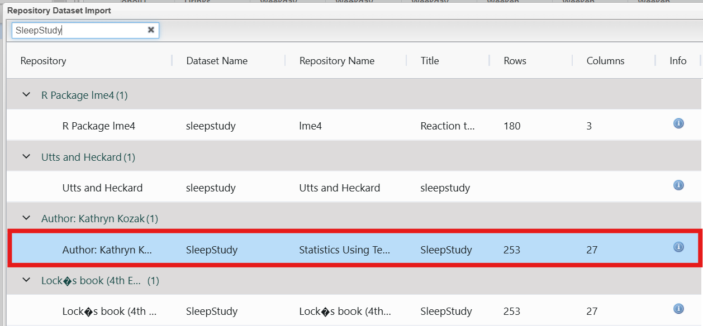
The dataset will now show in your Data toolbox. Right-click on the dataset and select Dataset Summary.
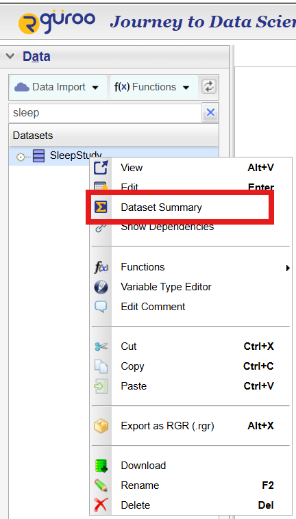
You should now see the dataset summary for the SleepStudy data.
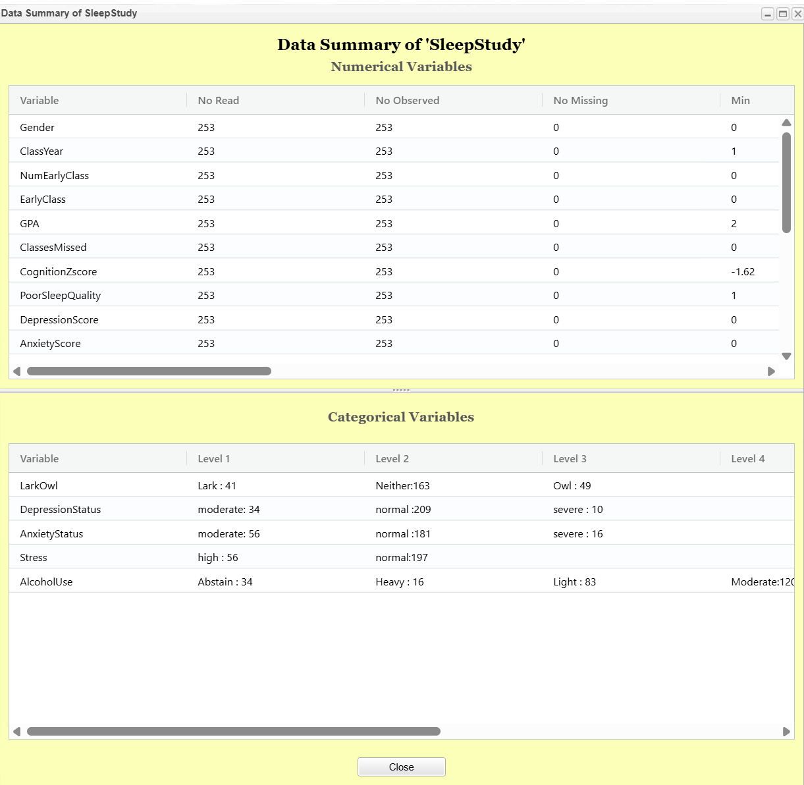
The Data Summary of SleepStudy window provides an overview of the numerical and categorical variables in the dataset. The Numerical Variables section shows the number of values read, observed, and missing for each variable. Scroll to the right within this section to view additional summary statistics for each numerical variable, including the minimum, maximum, mean, median, and standard deviation. The Categorical Variables section lists the levels for each categorical variable and the number of observations in each level. For example, LarkOwl contains 41 Larks, 163 Neither, and 49 Owls.
Also notice that gender was categorized as a numerical variable since it was either a 0 for male or 1 for female. We will work on reclassifying categorical variables recorded as numbers in the next subsection.
0.5.2 Reclassifying Variables
As we saw with the SleepStudy data, sometimes, numbers in a dataset are used to represent categories rather than numerical values. For example, in the SleepStudy data 0 represented male and a 1 represented female. In Rguroo, reclassifying a variable allows you to identify these values as categories so that the variable is treated appropriately during statistical analysis. Follow the steps below to reclassify a variable.
- Right click on the dataset and select Variable Type Editor. This will open the Variable Type Editor dialog box.
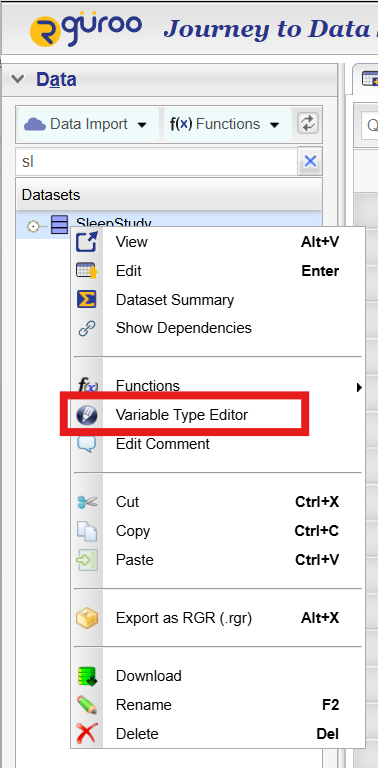
- Click and hold the variable that needs to be reclassified. Drag the variable into the Factor/Categorical Box.
- Click Update and your variable will now be reclassified as a categorical variable.
- If you would like to assign labels to the numbers recorded, click on the variable in the Factor/Categorical box. Notice that the rightmost box is now populated.
- Click under the Label heading and type in a label name for the number. Repeat for all numbers.
- Click Update.
Click Here to watch a video of how to reclassify a variable.
Walkthrough Example: Reclassifying a Variable
We will work with the SleepStudy data since we already noticed that gender was recorded as a number when we know it is a categorical variable.
Let’s Reclassify the Variable: You should have imported the SleepStudy data if you followed the last Walkthrough example. If not, import the dataset now.
To access the Dataset Variable Editor, right click on the SleepStudy dataset in your Data toolbox. Select Variable Type Editor. You should now see the dialog box on your screen.
Click and drag the variable Gender into the Factor/Categorical Box. Click update to save.
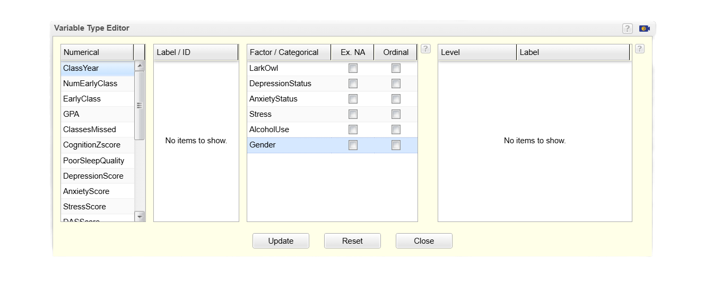
Since we were told in the code book that 0 represents male and 1 represents female, let’s go one extra step and assign a label to each number. Click on the variable Gender and the Label box will populate. Double-click on the label space next to 0 and enter Male. Repeat this process and enter Female for 1. Click update to save.
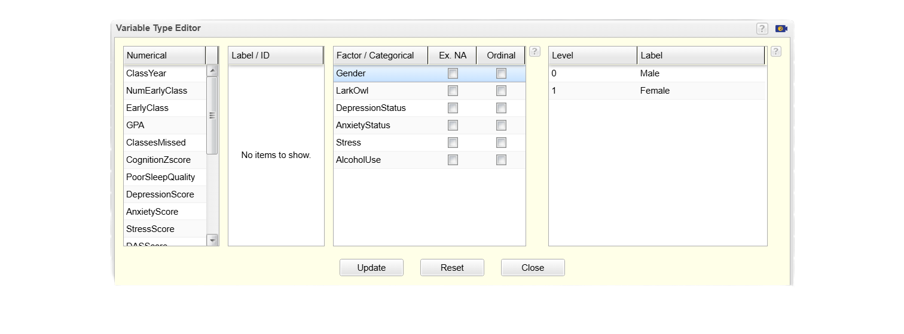
0.5.3 Search and Replace
The Search and Replace feature in Rguroo allows you to quickly locate specific values in a dataset and replace them with new values. This is especially useful for correcting data-entry errors, updating values, or making consistent changes throughout a dataset without editing each observation individually. Follow the steps below to search for entries or search and replace.
- Open a dataset you wish to inspect.
- To quickly locate a data entry, type the text into the Quick Search box. Click the down-arrow to search forward (down the column) or click the up-arrow to search backward (up the column) from your cursor location. The first instance of your search will be highlighted in green, while all instances will be highlighted in yellow, shown in Figure 32.
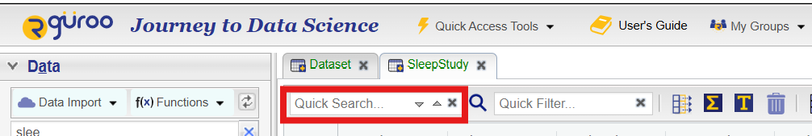
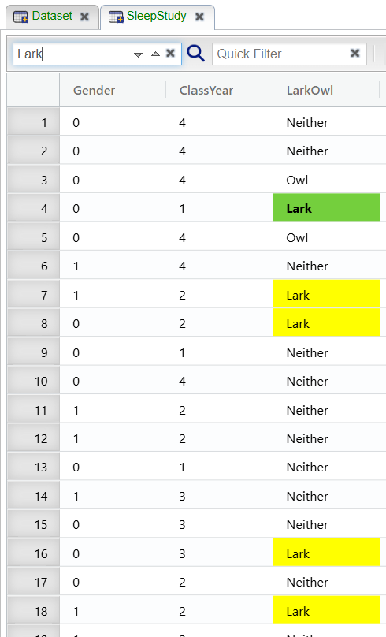
- To perform a refined search or search and replace, click the Search and Replace icon ⌕. This will open the Search and Replace dialog.
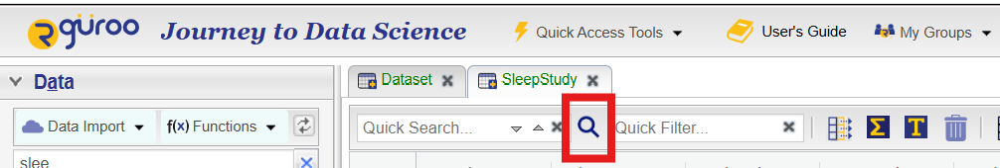
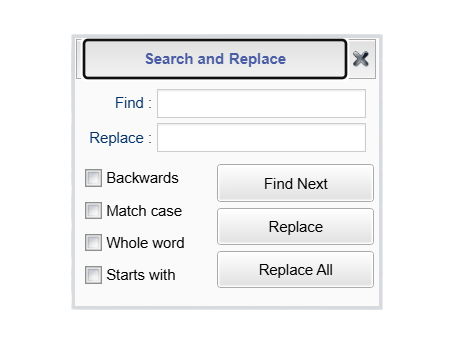
- In the Find textbox, type the text or value you want to search. You can also refine your search by selecting one of the following options: Match case, Whole word, or Starts with.
- Click the Find Next button and the first instance of the searched text will be highlighted in green. All other instances will be highlighted in yellow. Note: the output will be the same format as using the Quick Search
- To move to the next occurrence, click the Find Next button. Alternatively, if you want to move backwards, check the Backwards box and then click the Find Next button.
- Once you search for text and are sure you want to replace, you can enter the replacement and click Replace or Replace All.
Need video
Walkthrough Example: Search a Dataset
Use the SleepStudy dataset to search for severe anxiety.
Let’s Search the Dataset: To search the dataset for severe anxiety, first we need to open the dataset. Once open, we can either use the Quick Search or Advanced Search by clicking the eyeglass. Since we are simply searching, let’s use the Quick Search.
Begin by typing “severe” into the Quick Search textbox. Then click on the down-arrow. Your data should now be highlighted wherever it has “severe” as an entry. All occurrences are highlighted in yellow and the occurrence where the cursor is located is highlighted in green.
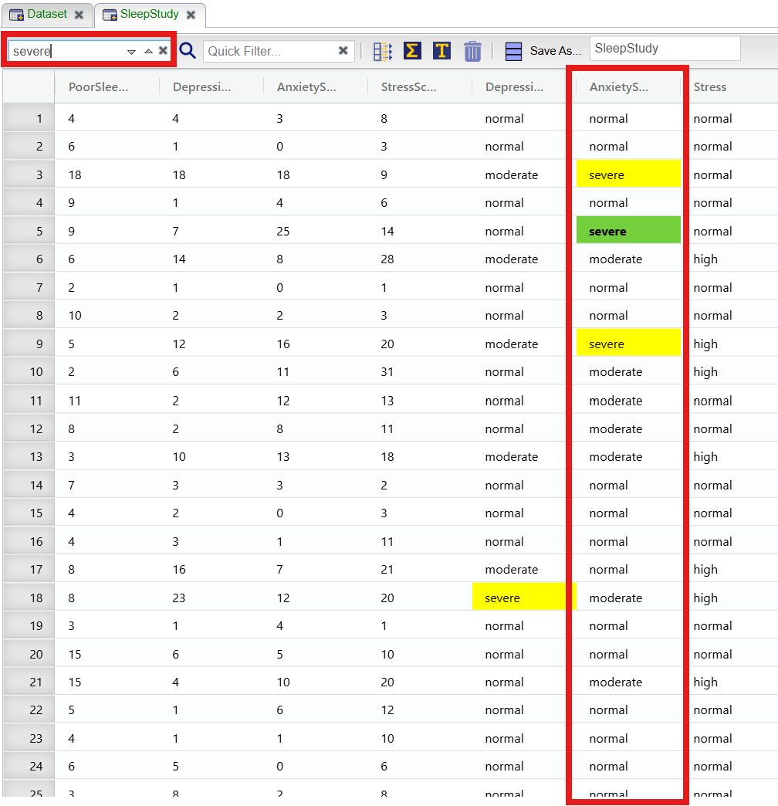
Notice that “severe” is also highlighted in the DepressionScore column since that was a label used for that variable as well. Since we are only interested in severe cases of the variable AnxietyScore, we will focus on that column only. If you scroll down the dataset, we can see that “severe” is not an overwhelming occurence, since most of the column is not highlighted as “severe.”
0.5.4 Sorting and Filtering Data
Sorting and filtering in Rguroo can help you organize a dataset and focus on the observations that are most relevant to your analysis. Sorting rearranges the rows based on the values of one or more variables, making it easier to identify patterns, compare values, or locate specific observations. Filtering temporarily limits the displayed data to observations that meet specified conditions, allowing you to examine a particular group or subset without changing the original data.
Sorting When you click on a variable name (column label) for the first time, the values in that column get sorted in ascending order, and an up-arrow appears next to the variable name. If you click on the variable name for a second time, the values in the column will be sorted in descending order, and a down-arrow appears next to the variable name. Clicking on the variable name for a third time will return the values of the variable to their original order.
You can repeat this process by clicking on the variable name again to toggle the sorting between original, ascending, and descending orders. Each click on the variable name will cycle through these three orders.
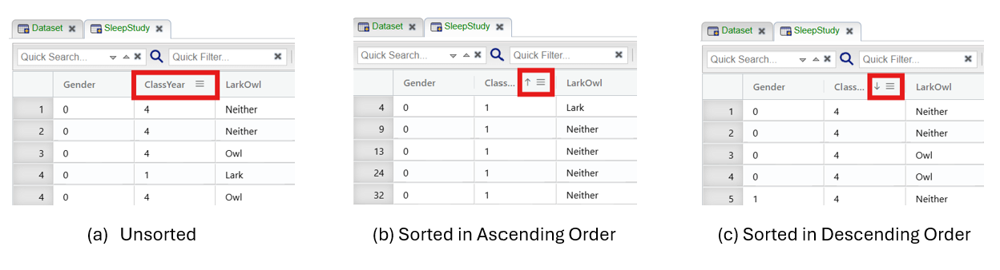
Filtering
To open and close the Filters Sidebar menu, click on the Filters tab. Variable names are listed in this tab. When you click on a variable name, you will see all of its unique values. You can filter the values of a selected variable by deselecting them. Note that when you filter a value from a variable, all rows containing that value will be removed from the dataset. To restore a filtered value, simply select the value again.
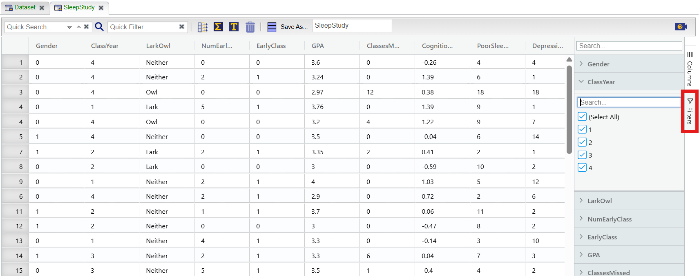
Walkthrough Example: Sort and Filter a Dataset
Use the SleepStudy dataset to sort GPA in descending order. Then filter to show only females.
Let’s Sort and Filter: Open the SleepStudy dataset. To sort GPA in descending order, click on GPA twice. Now that we have sorted the variable, we want to filter to show only females. Remember that the [SleepStudy Code Book] (#code-book-sleep) defined 0 as male and 1 as female. To only show females (1), click the filter menu on the left of the dataset workspace. Then click Gender. This will open the options of what is visible. Click 0 to unselect males. The dataset should now be sorted by GPA and only include females.
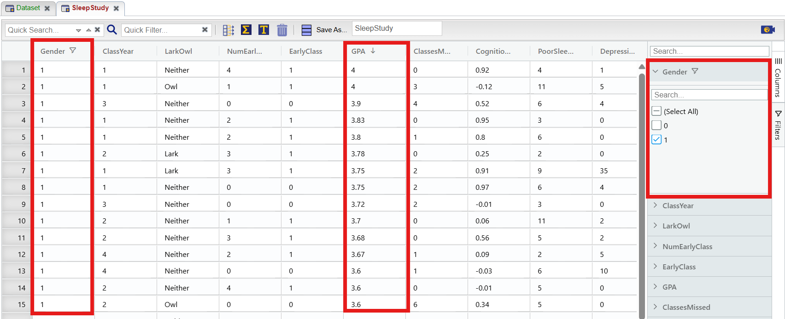
0.5.5 Practice: Try It Yourself
The following practice problems provide an opportunity to become familiar with inspecting, reclassifying, and sorting datasets in Rguroo. Use them to build confidence working with different methods of entering and importing data before completing graded assignments.
Try It: Inspect Data Using the Dataset Summary
Import the Tuition_4_year dataset. Open the Dataset Summaries box and make observations about the variables. Remember to scroll right to see summary statistics for numerical variables.
Try It: Reclassify a Variable
Use the SleepStudy to reclassify the variable AllNighter to a categorical variable. Review the [SleepStudy Code Book] (#code-book-sleep) to determine the definitions of 0 and 1.
Try It: Sort and Filter Data
Use the Tuition_4_year dataset to sort INSTATE_TUITION in ascending order. Then filter to include only colleges in California (CA).
0.6 Saving and Exporting Your Work
Rguroo is a cloud-based program, which means everything you save is stored in your Rguroo account rather than on your computer. When you log back in, from any computer with internet access, your saved datasets, graphs, and analyses will be exactly where you left them. Work that is not saved, however, is lost when you close the tab or log out. In this section, you will learn how to save datasets and outputs, where saved items appear, and how to export your work so you can submit it, share it, or keep a copy on your own computer.
0.6.1 Saving Datasets
Any time you create, edit, or change a dataset, you need to save it before it can be used in other Rguroo tools. Rguroo saves datasets using a Save As textbox, which appears at the top of the Dataset Editor, the Table Editor, and the data preview window that opens after you use a data function such as Subset or Transform. Follow the steps below to save a dataset.
- Type a descriptive name for the dataset in the Save As textbox at the top of the workspace.
- Click the
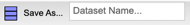
button. The dataset will now appear in your Data toolbox. - Check the tab at the top of the workspace. A red tab means the dataset has unsaved changes, and a green tab means all changes have been saved.
A few things to keep in mind when saving datasets:
- Saving with the same name replaces the dataset. If you save again using the same name, the old version is overwritten. If you want to keep the original, save the edited version with a new name.
- Choose names you will recognize later. A name such as cats_no_max or StudyHours_Week2 is much easier to find than Dataset1. Variable names cannot contain spaces, so Rguroo will replace any spaces in a variable name with a period.
- Save results from data functions. When you subset, sort, or transform a dataset, the result opens in a preview window. The result is not kept unless you save it using the Save As textbox in that preview window.
- Save Parameters. Some data functions, such as Transform, include a Save Parameters checkbox. When it is checked, Rguroo saves your dialog box settings along with the new dataset so you can reopen and edit them later. Leave this box checked if you think you may need to make changes after you log out.
Walkthrough Example: Saving an Edited Dataset Under a New Name
In Section 0.4.1, you created and saved the Study Hours dataset. Suppose a sixth student reports studying 9 hours per week. Add this value to the dataset and save the updated version as Study Hours 6 so the original dataset is not changed.
Let’s Save the Dataset: In the Data toolbox, right-click on Study Hours and select Edit to open it in the Dataset Editor (Figure 39).
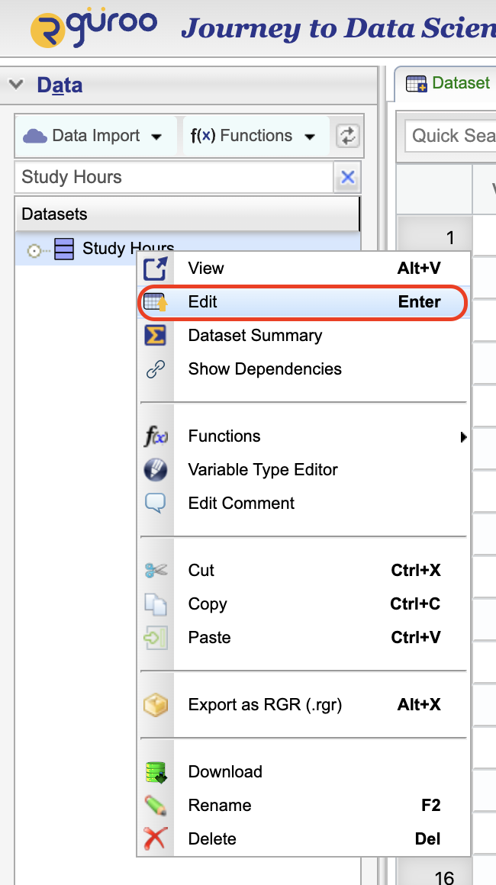
Click the Variable Properties, Add Rows/Variables button to add a new row (Figure 40).
In the Variable and Row Management dialog, enter 1 in the # of Rows box, select End radio button for Position, and click Add Rows (Figure 41).
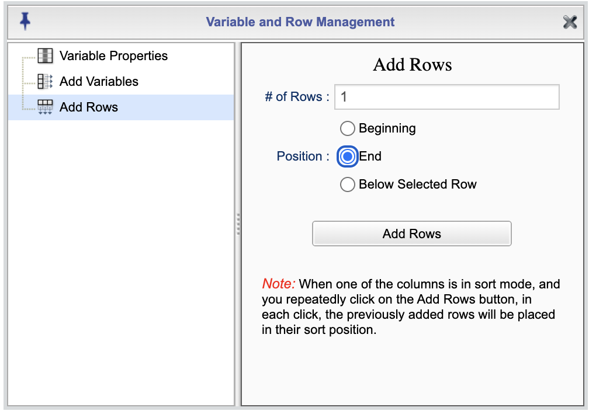
Enter 9 in the Hours column. Notice that the tab at the top of the workspace turns red because the dataset has unsaved changes. In the Save As textbox, type Study Hours 6 and click . The tab turns green, and your Data toolbox now lists both Study Hours (5 values) and Study Hours 6 (6 values) (Figure 42).
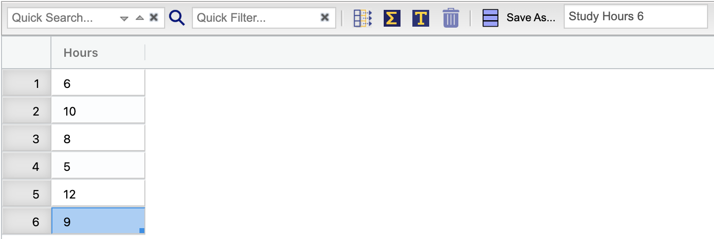
0.6.2 Saving Outputs
Graphs, analyses, and simulations can be saved just like datasets. When you save an output, Rguroo stores both the result and every setting you chose in the dialog box. Later, you can reopen the saved output and it will appear exactly as you left it, ready for you to review or make changes. This makes your work reproducible, meaning you or your instructor can see exactly how a result was produced. Follow the steps below to save an output.
- Fill in the dialog box (for example, a Boxplot or Summary Statistic dialog) and click the preview icon to check your output.
- Type a descriptive name in the Save As textbox at the top of the dialog box.
- Click the button . The saved output now appears in the toolbox where it was created.
Walkthrough Example: Saving a Graph
Create a boxplot of the Hours variable in the Study Hours 6 dataset and save it as Study Hours Boxplot.
Let’s Save the Graph: Open the Plots toolbox, click the Create Plot dropdown, and select Boxplot. From the Dataset dropdown, select Study Hours 6, and move Hours to the Selected column. Click the preview icon to see the boxplot (Figure 43). In the Save As textbox at the top of the dialog, type Study Hours Boxplot and click . The boxplot now appears in your Plots toolbox, and Study Hours 6 appears in green bold text in your Data toolbox (Figure 44).
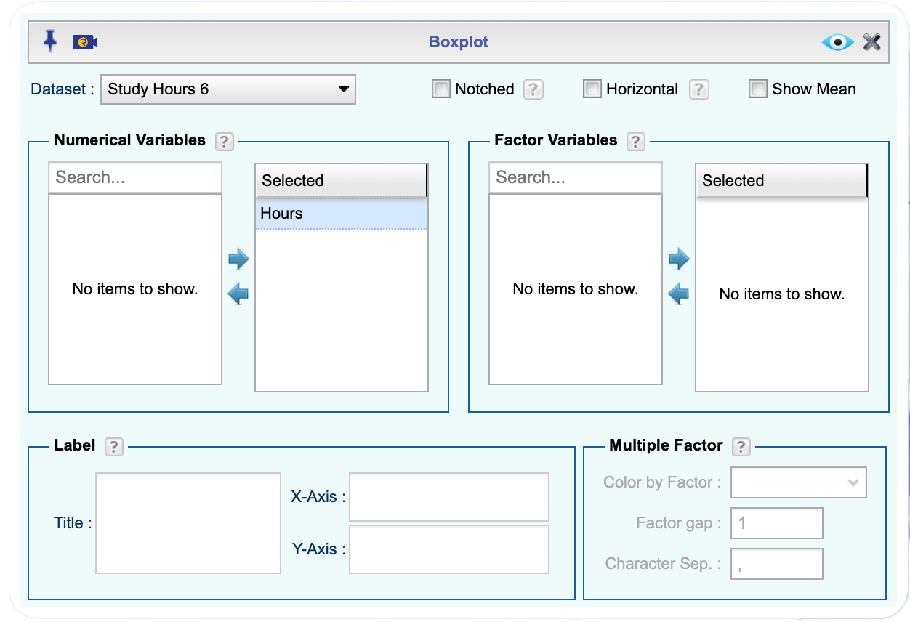
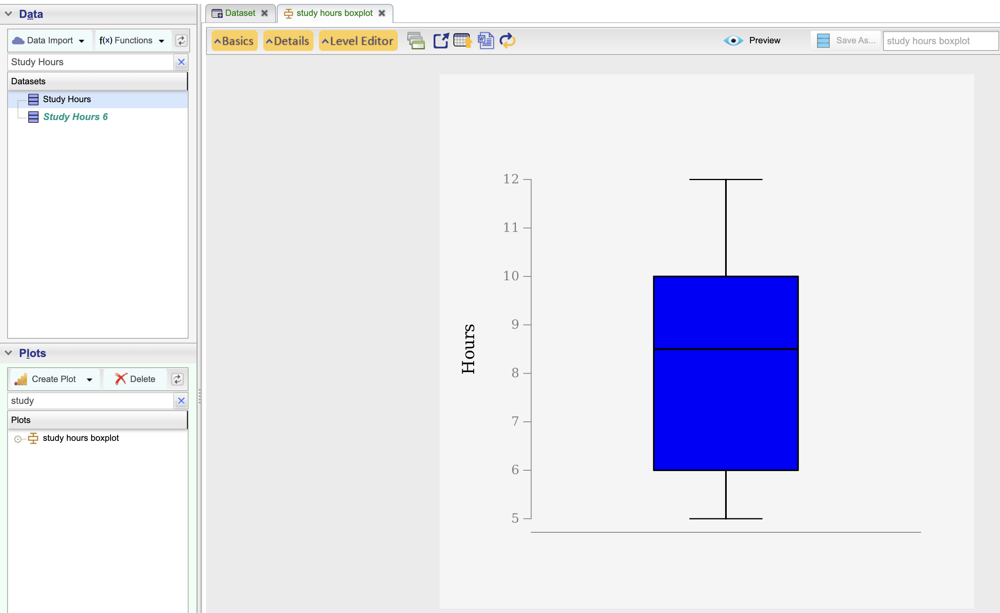
0.6.3 Where to Find Saved Datasets and Outputs
Each saved item appears in the toolbox where it was created:
| What you saved | Where it appears |
|---|---|
| Datasets and tables | Data toolbox |
| Graphs (boxplots, histograms, barplots, etc.) | Plots toolbox |
| Statistical analyses (confidence intervals, hypothesis tests, regression, etc.) | Analytics toolbox |
| Simulations and probability calculations | Probability-Simulation toolbox |
Because you will use the Data toolbox most often, it is worth learning how to keep it organized. The other toolboxes work the same way.
Finding a dataset. Type the first few letters of a dataset name in the search box at the top of the Data toolbox to narrow the list. Hovering your mouse over a dataset name shows its comment (if one was added), the number of rows, and the number of variables.
Organizing with folders. As the semester goes on, your list of datasets will grow. Folders can help you keep things organized, for example by creating one folder per chapter (Figure 45).
- Click the Data Import dropdown and select Add Folder to Root. You can also right-click on an empty area of the Data toolbox list and select Add Folder to Root.
- Type a name for the folder, such as Chapter 3.
- Drag and drop datasets into the folder.
Right-clicking on a folder gives you the options New Folder (to create a folder inside it), Export as RGR (.rgr), Rename, and Delete. A folder can only be deleted when it is empty.
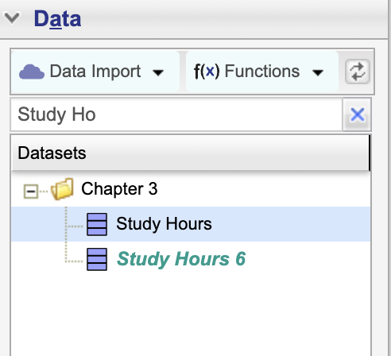
Right-click options for a dataset. Right-clicking on a dataset name opens a menu of options. Several of these were introduced in Section 0.5, and the rest are summarized below.
| Option | What it does |
|---|---|
| View | Opens the dataset in the data viewer (double-clicking the name does the same thing) |
| Edit | Opens the dataset in the Dataset Editor so you can change values, rows, or variables |
| Dataset Summary | Shows the dataset summary described in Section 0.5.1 |
| Variable Type Editor | Reclassifies variables, as described in Section 0.5.2 |
| Functions | Opens a list of data functions, such as Summary Statistic, Subset, and Transform, with this dataset already selected |
| Rename | Changes the name of the dataset |
| Edit Comment | Adds or edits a short description that appears when you hover over the dataset name |
| Download | Saves a copy of the dataset to your computer as a CSV file (see Section 0.6.4) |
| Delete | Permanently removes the dataset from your account |
0.6.4 Exporting
Saving keeps your work inside your Rguroo account. Exporting creates a file outside of Rguroo, which you can submit to your instructor, upload to your course website, add to a report, or keep as a backup. Rguroo provides three main ways to export.
Downloading a dataset as a CSV file
A CSV (comma-separated values) file can be opened in Excel, Google Sheets, or almost any other program.
- In the Data toolbox, right-click on the dataset name (Figure 46).
- Select Download.
- Click in the window that appears. Depending on your browser settings, the file will either save to your Downloads folder or you will be asked where to save it.
You can also download a dataset while viewing it, or from the preview window after using a data function, by clicking the download icon in the top-left corner of the data viewer.
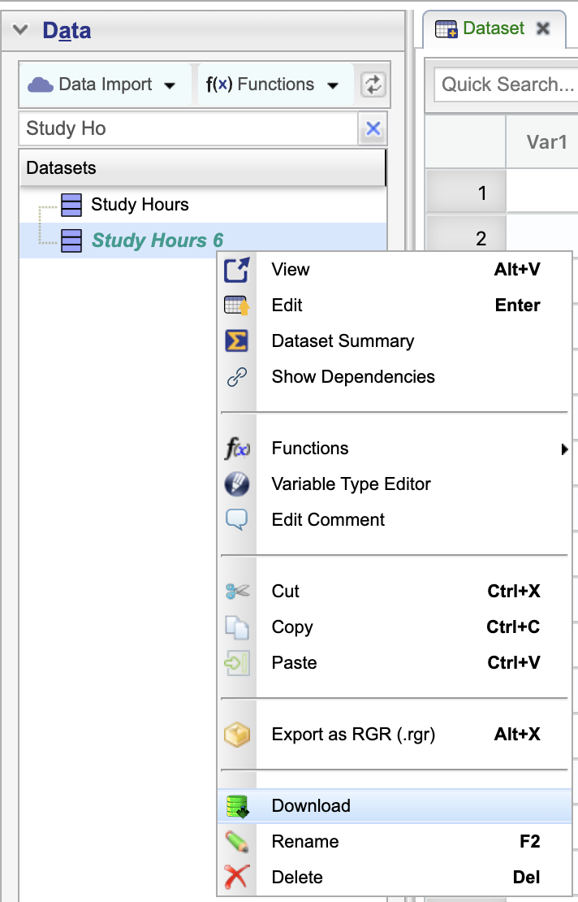
Saving a graph as an image
When you only need a single graph, such as a boxplot for a discussion post or lab report, you can save the graph itself as an image file.
- Open the saved graph, or click the preview icon to display it.
- Right-click on the graph and select Save image as (Figure 47).
- Choose a location on your computer and click Save.
Rguroo saves graphs as SVG files. An SVG image stays sharp at any size, so it looks clear when it is enlarged or printed. The desktop version of Microsoft Word and most web browsers can open SVG files. Some programs, including Google Docs, cannot. If you need to use your graph in one of those programs, take a screenshot of the graph instead: press Windows + Shift + S on a PC or Command + Shift + 4 on a Mac, then drag a box around the graph.
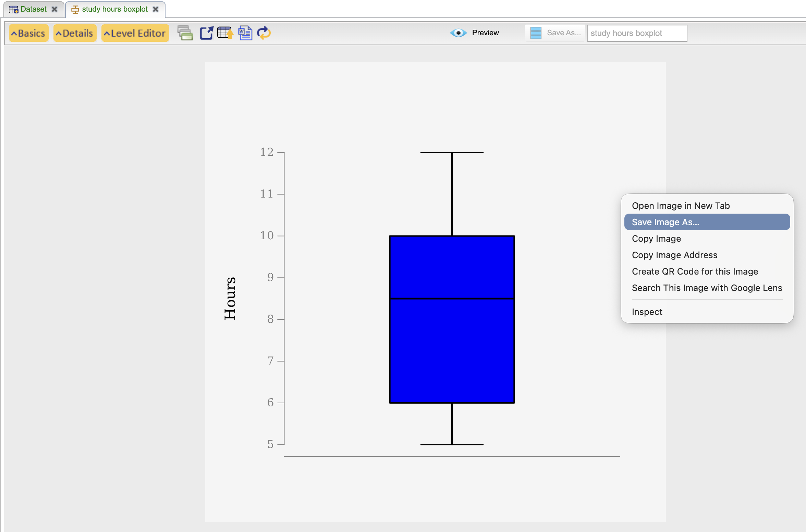
Exporting a report
Analyses in Rguroo produce a report: a set of tables, graphs, and written explanations in one output tab. Instead of saving each piece separately, you can download the entire report at once. Rguroo downloads the report as a zipped (compressed) folder that contains the report in two formats: a Word document (.docx) and an HTML file (a web page that opens in any browser), along with the graph image files.
- Run the analysis and click the preview icon to display the report.
- In the toolbar at the top of the output tab, click the Word icon. When you hover over it, it reads Download docx, html included (Figure 48).
- Save the zipped folder to your computer.
- Extract (unzip) the folder before opening any of the files:
- Windows: Right-click the zipped folder, select Extract All, and click Extract.
- Mac: Double-click the zipped folder. A regular folder with the same name appears next to it.
- Open the extracted folder to find the Word file, the HTML file, and the graph images.
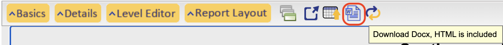
Each format in the download works best for a different purpose:
| Format | Best for | Things to know |
|---|---|---|
| HTML | Viewing or printing the complete report, including all graphs | The graphs are saved as separate image files. Keep them in the same folder as the HTML file, or the graphs will not appear. Each graph includes a written description for screen readers. |
| Word | Copying tables and results into a lab report or project | Open the file in the desktop version of Microsoft Word. The file may appear blank in Google Docs, Word Online, or other programs. Graphs are not included, so add them separately using Save Image As…. |
Walkthrough Example: Exporting a Report
Use the Mean Inference function to create a report for the Hours variable in the Study Hours 6 dataset. Then download the report.
Let’s Export the Report: Open the Analytics toolbox. Click the Analysis dropdown, select Mean Inference, and then select One Population (Figure 49). This opens the One Population Mean Inference dialog.
From the Dataset dropdown, select Study Hours 6, and from the Variable dropdown, select Hours. Rguroo automatically fills in the sample mean, sample standard deviation, and sample size (Figure 50). Leave all of the other options at their default settings and click the preview icon .
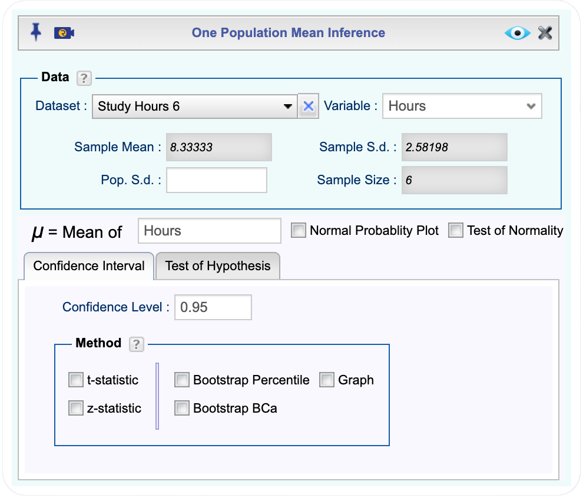
The report opens in a new tab with a Data Summary table showing a sample size of 6, a mean of 8.33333 hours, and a sample standard deviation of 2.58199 hours (Figure 51). Notice the Word icon in the toolbar at the top of the report.
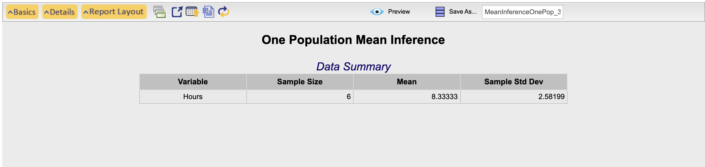
Next, click the Word icon (Download Docx, HTML is included) in the toolbar. Rguroo saves a zipped folder named MeanInferenceOnePop followed by a number to your Downloads folder (Figure 52). Extract the folder (Figure 53). Inside, you will find a Word file and an HTML file with the same name.
Open the Word file in Microsoft Word (Figure 54). The Data Summary table is ready to copy into a lab report or project. Then open the HTML file in your web browser (Figure 55) to see the report exactly as it appears in Rguroo.
Saving the analysis with before you export is a good habit. If you need to change something later, you can reopen the saved analysis, make the change, and export again.
Exporting and importing RGR files
An RGR file (a file ending in .rgr) is Rguroo’s own file type. It packages a saved graph, analysis, or dataset together with all of its dialog box settings and the datasets it uses. When someone imports your RGR file into their own Rguroo account, they see your work exactly as you saved it. Instructors often use RGR files to share class examples, and students can use them to submit Rguroo work for homework, projects, and exams.
To export an RGR file:
- Place the items you want to export in a folder in the appropriate toolbox (see Section 0.6.3).
- Right-click on the folder and select Export as RGR (.rgr).
- Save the .rgr file to your computer.
To import an RGR file that someone has shared with you:
- Open the Data toolbox.
- Click the Data Import dropdown and select RGR (.rgr). You can also use the import option in the Quick Access Tools (see Section 0.7.1).
- Choose the .rgr file and click .
Rguroo places the imported items in a new folder named Imported followed by the date and time, inside each toolbox the items belong to. For example, an RGR file containing a boxplot will add a folder with the dataset to the Data toolbox and a folder with the boxplot to the Plots toolbox. You can then rename or move these items as you like.
Walkthrough Example: Exporting Your Work as an RGR File
Your instructor asks you to submit the boxplot you created in Section 0.6.2 as an RGR file.
Let’s Export the Work: Open the Plots toolbox and create a folder named Week 1 Submission. Drag Study Hours Boxplot into the folder. Right-click on Week 1 Submission and select Export as RGR (.rgr) (Figure 56), then save the file to your computer. Because the RGR file includes the dataset the boxplot uses, your instructor will see both the boxplot and the Study Hours 6 data when they import it. Upload the .rgr file wherever your instructor has asked you to submit it.
Try It: Save, Organize, and Export
Use the Exercise Time dataset you created in Section 0.4.5.
- Create a folder in your Data toolbox named Getting Started and move Exercise Time into it.
- Download Exercise Time as a CSV file and open it on your computer to confirm the five values are there.
- Create a boxplot of the exercise times and save it with an appropriate name. Check that it appears in your Plots toolbox and that Exercise Time now appears in green bold text in your Data toolbox.
- Place the boxplot in a folder in the Plots toolbox and export the folder as an RGR file.
0.7 Resources in Rguroo
You do not need to memorize every Rguroo feature. Rguroo includes several built-in resources you can turn to when you are unsure how to do something. This section describes where to find them.
0.7.1 Quick Access Tools
The Quick Access Tools dropdown at the top of the Rguroo window (item 2 in Figure 4) provides shortcuts to features you will use often. Click Quick Access Tools to open the menu (Figure 57).

| Tool | What it does |
|---|---|
| Import | Imports a dataset from your computer or a URL, or imports an RGR file (see Sections 0.4.4 and 0.6.4) |
| Scientific Calculator | Opens a Desmos scientific calculator, useful for quick calculations such as factorials, combinations, and permutations |
| Shortcut Keys | Lists keyboard shortcuts for working in Rguroo |
| Dataset Repository | Opens the Rguroo Dataset Repository so you can import a dataset (see Section 0.4.4) |
| Jupyter Lite | Opens a browser-based coding notebook. This is an optional tool for users who want to write code and is not needed for this course |
0.7.2 User Guide
Rguroo provides written guides at three levels of detail. All of them can be opened from the User’s Guide and Documentation buttons at the top of the Rguroo window (items 3 and 6 in Figure 4) or from the Resources menu on the Rguroo website.
- Quick User’s Guide (web-based). This is the best place to start. It is organized by topic, from the Dataset Editor and data functions to plots, inference, probability, and simulation. Each topic gives short step-by-step instructions with examples that use datasets from the Rguroo repository, so you can follow along in your own account. A camera icon next to a topic links to a video for that topic.
- Full User’s Guide (PDF). A longer reference with more technical detail about every dialog box option and the statistical methods Rguroo uses.
- Dashboard Quick Guide (web-based). Instructions for the instructor Dashboard, covered in Section 0.9.
Help is also available inside each dialog box. Next to the name of each section of a dialog box is a small question mark icon . Click the question mark to open a Help window that explains the options in that section (Figure 58). For example, clicking the question mark next to Numerical Variables in the Boxplot dialog explains how to select variables and how to create side-by-side boxplots. Close the Help window by clicking the X in its upper-right corner. The question mark is often the fastest way to find out what a particular checkbox or dropdown does.

Walkthrough Example: Using the Quick User’s Guide
Suppose you want to learn how to create a histogram, a graph you will use in Chapter 2.
Let’s Find It in the Guide: Open the Quick User’s Guide. In the table of contents on the left, find the topic Plots for Numerical Data and select Histogram. Alternatively, you can type Histogram in the search bar that can be accessed by clicking the magnifying glass icon. The page shows which toolbox and menu to use, describes the options in the Histogram dialog, and works through an example with a dataset you can import from the repository. If you prefer to watch, click the camera icon to open the video for that topic.
0.7.3 Video Tutorials
Short “how-to” videos are available for most Rguroo features. You can find them in three places:
- Inside Rguroo. Click the Tutorial Videos button at the top of the Rguroo window (item 5 in Figure 4).
- On the Rguroo website. Visit the Rguroo Video Tutorials page.
- On YouTube. Visit the Rguroo YouTube channel.
Throughout this text, a camera icon followed by Click Here means a video is available for the skill being described.
0.8 How Rguroo is Used in the Text
This text uses Rguroo in every chapter. To help you find the instructions you need quickly, Rguroo steps, dialog boxes, and outputs are always presented in the same way. This section explains what to look for.
0.8.1 Identify Instructions for Solutions
Each worked example in this text is set up the same way:
- The example states the problem. If the example uses a dataset, a line with the dataset repository logo
 tells you the name of the dataset and the repository it is in. A collapsible code book describes each variable.
tells you the name of the dataset and the repository it is in. A collapsible code book describes each variable. - The 🔎 Solution box is collapsed so you can try the problem on your own first. Click it to expand the full solution.
- Inside the solution, Rguroo steps appear in their own collapsible box marked with the Rguroo logo . Click the box to see numbered, step-by-step instructions.
- Many Rguroo boxes include a nested box labeled Click here to see the Rguroo dialog, which shows a screenshot of the completed dialog box so you can compare it with yours.
When a set of Rguroo steps is used again later in a chapter, the text links back to the first full set of instructions (for example, “as shown here”) rather than repeating them. Many Rguroo boxes also begin with a Before you begin note reminding you to import the dataset first.
Within Rguroo steps, different parts of the Rguroo window are formatted differently so you can tell at a glance what you are looking for on the screen.
| Formatting in the text | What it refers to | Example |
|---|---|---|
| Bold | A toolbox on the left side of the Rguroo window | Data, Plots, Analytics |
| Dropdown | A dropdown menu or button you click to see a list | Functions, Dataset |
| Function | A function or menu item you select | Summary Statistic, Boxplot |
| Dialog | The name of a dialog box | Basic Summary Statistic |
| Option | A field, checkbox, or option inside a dialog box | Mean, Sample Size |
| Type this | Text you type exactly as shown | kozak |
| A button you click | , | |
| dataset | The name of a dataset | cats |
| variable | The name of a variable in a dataset | Bwt |
| Repository | The name of a dataset repository | Kozak |
Walkthrough Example: Following a Solution with Rguroo Steps
The example below is set up exactly like the examples you will see in later chapters. Try it now using the Study Hours dataset you created in Section 0.4.1.
Example 1 (Finding the Mean Study Time) Find the mean number of hours per week that the five students in the Study Hours dataset study.
0.8.2 Dialog Boxes
A dialog box is the window where you tell Rguroo what you want to do. You choose the dataset and variables, select options, and then click the preview icon to see the result. Most dialog boxes are organized from top to bottom in the order you fill them in: first the dataset, then the variables, then the options.
How tabs work. Each time you open a dataset or select a function, such as Boxplot or Mean Inference, Rguroo opens a new tab in the workspace. The tab holds everything for that task: the dialog box appears as a window on top of the tab, and when you click the preview icon, the output appears in the same tab behind it. Because each task has its own tab, you can switch between a dataset, a graph, and an analysis without closing any of them. After you save, the tab takes the name you entered in the Save As textbox.
Reopening the dialog box. The toolbar at the top of each tab has yellow buttons such as Basics and Details. Click Basics to reopen the dialog box with the most common options (Figure 61), or Details for additional options. Your earlier selections are still there, so you can change one setting and preview again without starting over. Graph tabs also have a Level Editor button for changing the order, labels, and colors of categories. Analytics tabs have a Report Layout button for choosing what appears in the report.
![Rguroo workspace with two tabs, Dataset and study hours boxplot. The study hours boxplot tab is selected, and its toolbar shows the Basics button, highlighted and open, followed by the Details and Level Editor buttons, a row of icons, the Preview button, and the Save As textbox containing study hours boxplot. The Boxplot dialog box floats over the tab with Study Hours 6 selected as the dataset and Hours in the Selected column, and part of the blue boxplot output is visible behind it on the right.](Rguroo_outputs/Chapter_0/tab_dialog_output.png)
Screenshots of completed dialog boxes appear in the boxes labeled Click here to see the Rguroo dialog, or as figures with captions such as “Basic Summary Statistic Dialog for the Study Hours Dataset.” Use these screenshots to check your work. If your result does not match the text, compare your dialog box with the screenshot to find which selection is different.
A few tips for working with dialog boxes:
- Icons in the title bar. The title bar of each dialog box has a pin icon on the left, which keeps the dialog box open while you work, and a camera icon that opens a video about that dialog box. On the right are the preview icon and an X to close the dialog box. Closing the dialog box does not close the tab or delete your output.
- Help is built in. Click the question mark icon next to any section name in a dialog box to see an explanation of its options (see Section 0.7.2).
- Your screen may look slightly different. Rguroo is updated regularly, so the layout or colors on your screen may differ a little from the screenshots. The names of menus, options, and buttons will be the same.
0.8.3 Rguroo Outputs
When you click the preview icon , Rguroo displays the result in the same tab as the dialog box. Depending on the function, the output may be a graph, a table of results, or a full report with tables, graphs, and a written explanation of how to interpret the results. If you change a selection in the dialog box and click the preview icon again, the output updates in place.
In this text, Rguroo outputs appear in two ways:
- Screenshots of the output, shown as figures with a caption (for example, “Mean and Median Weight of Cats”). These show the key numbers you should see when you complete the steps.
- Interactive outputs, shown in a scrollable window inside the page. These are the actual Rguroo output, so you can scroll through the full report, and graphs can be explored the same way they would be in Rguroo. If you are using a keyboard, press Tab to move into the output window and use the arrow keys to scroll.
When you compare your output to the text, focus on the values the question asks for. Results based on simulation or random sampling (introduced in Chapter 4) will be slightly different every time they are run, so your numbers will be close to, but not exactly the same as, the numbers in the text.
0.8.4 Rguroo Icons
The following icons appear in Rguroo and throughout this text. Some were introduced in Section 0.3. They are collected here so you have one place to look them up.
| Icon | Name | Where you see it | What it means |
|---|---|---|---|
| Preview | Rguroo dialog boxes and this text | Runs the dialog box and shows the graph, table, or output | |
| Save As | Rguroo data and outputs | Saves the dataset or output with the name typed in the Save As textbox | |
| Dataset repository | This text | The dataset for an example or exercise is available in an Rguroo dataset repository | |
| Rguroo logo | This text | A collapsible box with step-by-step Rguroo instructions | |
| Add | Rguroo dialog boxes | Adds a new row, such as a new logical expression or a new variable | |
| Filters | Rguroo Dataset Editor | Opens the Filters panel so you can hide rows with certain values | |
| Camera | This text and the Rguroo User’s Guide | A video is available for this skill | |
| Try It | This text | A practice problem to try on your own |
Try It: Find the Icons
Open the Summary Statistic dialog in Rguroo and locate the Preview icon and the Save As textbox. Then open the Subset dialog and find the green Add icon . Hover over each icon to confirm its name.
0.9 Instructor Dashboard
The Rguroo Dashboard is a set of tools for instructors. From the Dashboard, you can create groups for your classes, build your own dataset repositories, share those repositories with your students, monitor student login activity, and email your students. Students do not have access to the Dashboard, but they benefit from the repositories and emails you share with them through it.
0.9.1 Creating Instructor Account
Faculty accounts in Rguroo are free. To register, you must use your institution-issued email address (for example, an address ending in .edu). The Rguroo team reviews each faculty registration manually before approving it, and accounts registered with a personal email address, such as Gmail or Yahoo, will not be approved.
Instructors register in much the same way as students (see Section 0.2), with one difference: on the registration page, select Faculty instead of Student (see Figure 2).
- Go to the Rguroo website and click Register in the upper-right corner.
- Select Faculty.
- Enter your institutional email address and complete the email verification, as described in Section 0.2 (Figure 62).
- Complete the Your Information page, including your institution’s name.
- Click Submit, then check your email and complete the verification, as described in Section 0.2. Because faculty accounts are reviewed manually, approval is not immediate. You will receive an email when your account has been approved.
Once your faculty account is active, a Dashboard button appears at the top right of the Rguroo window (item 7 in Figure 4).
Rguroo also offers free workshops and one-on-one training for faculty. To schedule a session, visit the Request Training page.
0.9.3 Creating Repositories
A dataset repository is a collection of datasets that users can import into their own Rguroo accounts with a few clicks. The Kozak repository used throughout this text is one example. Creating your own repository lets you give students exactly the datasets they need for a lab, project, or exam.
Creating a repository
- In the Dashboard, select the Repositories icon to open the Manage Repositories page.
- Click the REPOSITORY button at the top of the directory pane (Figure 64). To create the repository inside a folder, click the plus sign next to the folder name instead.
- In the Create Repository dialog, enter a unique Name and, optionally, a Description and click CREATE.
Adding datasets to a repository
Select the repository name to open its Manage Repository page (Figure 65). In the Datasets section, the icons on the right let you add datasets in three ways:
![Rguroo Dashboard page titled Manage Repository: New Repository. Below the title, the repository name New Repository and the note Created: a few seconds ago appear, followed by a count of 0 Datasets with a pencil edit icon and a trash icon on the right. The Datasets section below shows 0 Records found and a row of icons on the right: a download arrow, a shaded plus, a plus sign with three lines, a plain plus sign, and an up arrow to collapse the section. The empty table has columns for Name, Title, File Type, Comment, Columns, and Rows.](Rguroo_outputs/Chapter_0/dashboard_manage_repository.png)
- Upload a CSV or Excel file from your computer. Click the plain plus sign (fourth icon) and select the file. Then enter:
- Name: the dataset name students will see in their Data toolbox after importing.
- Title: the title shown in the repository list.
- Comment (optional): a short description students see when hovering over the dataset name.
- Documentation (optional): a full description of the dataset, typed in the text editor or uploaded as a text (.txt) or HTML file. Students can open it from the information icon in the repository list. This is a good place to paste the dataset’s code book.
- Import datasets from your own Rguroo account. Click the plus sign with three lines (third icon), check the datasets you want from your Data toolbox, and click .
- Import datasets from a repository another instructor has shared with you. Click the shaded plus (second icon), choose the shared repository, select the datasets, and click the import button.
| Icon | What it does |
|---|---|
| Down arrow (first icon) | Downloads selected datasets to your computer |
| Shaded plus (second icon) | Imports datasets from a repository another instructor shared with you |
| Plus with three lines (third icon) | Imports datasets from your own Rguroo account |
| Plain plus (fourth icon) | Uploads a CSV or Excel file from your computer |
Managing datasets in a repository
Each dataset in the list has a download icon and an eye icon for previewing it. Hover over a dataset name to see the eye icon (preview) and the down-arrow icon (download). To delete or update a dataset, check the box next to its name. A bar appears at the bottom of the page with the buttons DELETE SELECTED DATASET and UPDATE DATASET DETAILS (Figure 66). Use UPDATE DATASET DETAILS to change a dataset’s name, title, comment, or documentation. To rename a repository or change its description, click the pencil icon next to the dataset count. To delete a repository, click the trash icon next to it.
0.9.4 Creating Groups
A group is a set of Rguroo users, usually the students in one of your classes. Groups are how you share repositories with students, monitor their activity, and send them emails.
Creating a group
- In the Dashboard, select the Groups icon to open the Manage Groups page.
- Click the GROUP button at the top of the directory pane (Figure 67), or click the add-group icon next to a folder name to create the group inside that folder. You can also duplicate an existing group using the duplicate button.
- In the Create Group dialog, enter:
- Name: for example, STAT C1000 Section 12345 Fall 2026.
- Group Code: the code students will type to join. Type your own alphanumeric code or click for a random one. Rguroo will ask for a different code if yours is already in use.
- Description (optional).
- Expiration Date: the date the group expires. The default is six months after the group is created. After the group expires, members can no longer access the repositories shared with the group, although any datasets they already imported stay in their accounts. and click CREATE
Adding students to a group
There are two ways to add members:
- Students join with the Group Code. Give students the Group Code (for example, in your syllabus or course website). Students join by clicking My Groups at the top of the Rguroo window, selecting Join a Group, entering the code, and clicking Join Group, as described in Section 0.4.4.
- You invite students by email. Select the group, then in the Members section click the plus sign, enter the student’s Rguroo username (email), and click . To invite a whole class at once, click the plus-sign-with-three-lines button, download the CSV or Excel template, fill in your students’ email addresses, and import the completed file. Each student receives an email with the Group Code and instructions for joining.
0.9.5 Linking Repositories to Groups
Creating a repository does not automatically give students access to it. You need to share (link) the repository with a group.
- In the Dashboard, select the Groups icon and click the name of the group.
- At the bottom of the page, find the section labeled Share My Repositories and click the down arrow to see the repositories you have created.
- In the Action column, click the share button in the row for the repository you want to share.
The Status column changes to show that the repository is shared, and the share button changes to an unshare button. To stop sharing the repository with that group, click the unshare button. You can share the same repository with several groups, which is useful when you teach more than one section of the same course.
Students can then import the shared datasets in either of two ways:
- Click My Groups and select Show My Groups, then select the group and repository (see Section 0.4.4).
- In the Data toolbox, select Data Import then Dataset Repository, choose the My Repositories option, and select the repository.
Sharing a repository with another instructor
Repositories can also be shared directly with other faculty, even if they are not in one of your groups. This is a convenient way for a department to share a common set of datasets. In the Repositories page, hover over the repository and click the share icon. In the Share Repository dialog (Figure 70), type the instructor’s Rguroo username (email) in the Email of user to add box, click the plus icon, and then click SHARE. To stop sharing, click the trash icon next to their name. Students can only be given access to repositories through groups.
0.9.6 Student Activity Log
The Dashboard lets you see when, and for how long, each group member has been logged in to Rguroo. This can help you check whether students are getting started with Rguroo early in the term, or follow up with a student who has not logged in.
- In the Dashboard, select the Groups icon and click the name of the group. A list of group members appears.
- Move your mouse over a student’s name and click the activity monitor icon.
- A time plot opens showing the dates the student logged in along the horizontal axis and how long they were logged in each time.
The member list also provides two other tools:
- Emailing students. Check the box next to the Name header to select everyone, or check individual students. Click the send-mail button at the bottom of the page, enter a subject and message, and click send. Emails come from a no-reply address, so ask students to contact you through your usual channels rather than replying.
- Removing students. Select the students’ names and click the remove-members button at the bottom of the list. Removed students immediately lose access to the repositories shared with the group.
0.9.7 Applets and Calculators
The Applets-Calculators toolbox on the left side of the Rguroo window contains interactive tools that are useful for in-class demonstrations and for students exploring probability and inference concepts on their own. All Rguroo users, not just instructors, have access to this toolbox.
To open an applet, click Applets-Calculators on the left side of the Rguroo window, expand a folder by clicking the plus sign next to it, and double-click the applet you want. You can also type part of an applet’s name in the Search Applet box to narrow the list (Figure 74).
![Rguroo Applets-Calculators toolbox expanded below the Data, Plots, Analytics, Prediction-Classification, and Probability-Simulation toolboxes. A Search Applet box appears above an Applets list containing three folders. The Art of Stat folder contains Exploratory Data Analysis, Association and Correlation, Distributions, Central Limit Theorem, two Confidence Intervals folders, and Inference for Comparing groups. The Rossman/Chance folder contains Sampling Distribution, Data Analysis, Probability, and Statistical Inference. The Calculators (Desmos) folder contains Scientific Calculator, Four Function Calculator, and Graphical Calculator.](Rguroo_outputs/Chapter_0/applets_calculators.png)
The toolbox is organized into three folders:
- Art of Stat. Applets that accompany the Statistics: The Art and Science of Learning from Data textbook, organized by topic: Exploratory Data Analysis; Association and Correlation; Distributions; the Central Limit Theorem; Confidence Intervals and Significance Tests; and Inference for Comparing Groups.
- Rossman/Chance. Well-known teaching applets organized into four areas: Sampling Distribution, Data Analysis, Probability, and Statistical Inference. They are especially useful for simulation-based demonstrations, such as showing how a sampling distribution builds up as more samples are drawn.
- Calculators (Desmos). Three Desmos calculators: a Scientific Calculator, a Four Function Calculator, and a Graphical Calculator. The Scientific Calculator can also be opened from the Quick Access Tools menu (see Section 0.7.1). Chapter 4 uses its func menu to compute factorials, permutations (\(_nP_r\)), and combinations (\(_nC_r\)).
Walkthrough Example: Using the Desmos Scientific Calculator
A class of 30 students needs to choose a 3-person committee. Use the Desmos Scientific Calculator in Rguroo to find the number of possible committees.
Let’s Use the Calculator: Open the Applets-Calculators toolbox, expand the Calculators (Desmos) folder, and double-click Scientific Calculator. Click the func button and select nCr. Type 30, 3 and the calculator displays 4,060 (Figure 75). There are 4,060 possible committees. You will learn why this is a combination, and when to use one, in Chapter 4.
Try It: Use the Desmos Scientific Calculator
Open the Desmos Scientific Calculator in Rguroo and use the func tab to complete each calculation.
- A coffee shop offers 8 pastries. Find \(8!\), the number of ways to arrange all 8 pastries in a display case, using the ! button.
- A club with 10 members needs to choose a president, vice president, secretary, and treasurer. Find the number of ways to fill these four positions using nPr with \(n = 10\) and \(r = 4\).
- Recall the six values in the Study Hours 6 dataset: 6, 10, 8, 5, 12, 9. Use mean and stdev to find the mean and sample standard deviation, separating the values with commas. Compare your answers with the Rguroo report you created in Section 0.6.4.